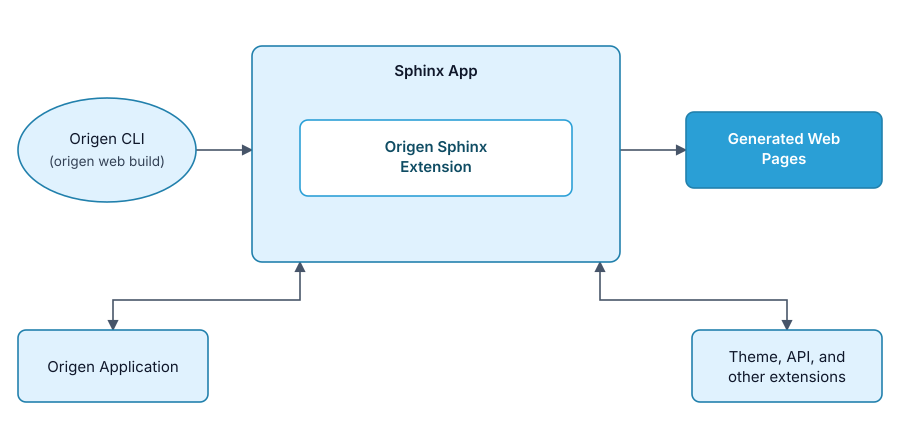
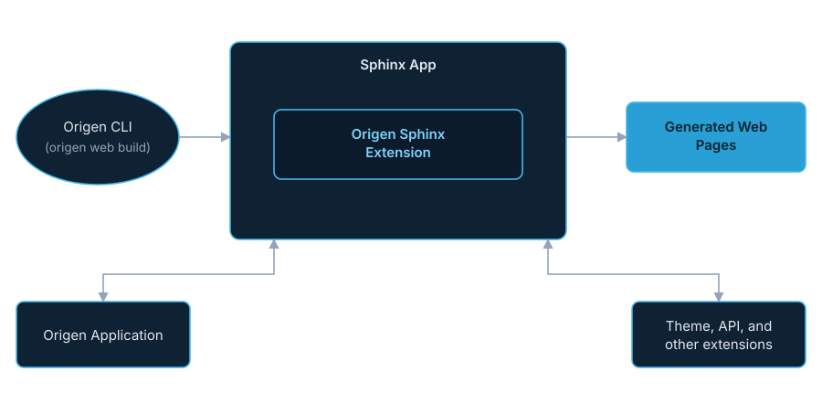

Core Concepts#
Before we can start adding content, we’ll go through some of the core concepts of documenting your Origen application.
The previous section mentions:
Your Origen application documentation engine features:
A fully-functioning Sphinx app out-of-the-box.
What exactly does this mean?
Origen leverages some external libraries to assist in the website generation, the base of which is
Sphinx. If you ran origen web build from the previous section,
you probably noticed output referencing Sphinx in various forms.
Sphinx is a widely used Python library for generating static documentation, including the Python documentation itself!. If you’re coming from a Python-heavy background there’s a high chance you’ve viewed some documentation source generated from Sphinx or even used it yourself. Sphinx is the engine which generates your Origen application’s docs.
If you’re already familiar with Sphinx, glancing at the block diagram and jumping to the origen sphinx extension will give you the most pertinent information.
Nomenclature and Glossary#
Throughout the entirety of the documenting chapter, the following terms will be in effect:
Origen application - Your Origen application, created using
origen newSphinx app - Your Sphinx app, embedded inside of your Origen application and also created from
origen newSphinx - The backend library which handles the actual compilation and generation of the webpages.
Sphinx Extensions - Libraries which ‘plug into’ your Sphinx app to provide enhanced features or customizations.
Sphinx Themes - Libraries which customize the ‘look and feel’ of your webpages.
Origen CLI - The Origen command line interface.
Sphinx CLI - The Sphinx command line interface, driven by the Origen CLI.
origen web - The Origen CLI command for driving the Sphinx CLI.
origen_sphinx_ext - A Sphinx extension Origen provides to bridge the gaps between the Origen CLI, your Origen application, and your Sphinx app.
Origen Theme - An Origen-provided Sphinx theme which gives all Origen applications a similar styling.
The Sphinx App#
As stated previously, Sphinx is a Python library for generating static webpages
which Origen’s documentation features are built atop of. As also previously stated, when you run
origen new you’ll get your Origen application but you’ll also get a smaller app, the Sphinx app,
living inside the larger Origen application.
When you run origen web build, you’re actually running Origen’s wrapper around this Sphinx app
(details of which are covered later). Sphinx itself handles the actual compilation and generation
of the webpages.
Sphinx allows for extensions, which can add additional
functionality to an existing Sphinx app. Origen ties into Sphinx through a custom extension,
called the origen sphinx extension. Extensions will be covered later but for now all you need to know is
the origen_sphinx_extension exists and is instrumental is tieing your Origen application
and Sphinx app together. That said, to add documentation to your project,
the view below is sufficient to get started:
Doc System Block Diagram#
{kind=link}

Doc System Block Diagram#
{kind=link}

Doc System Block Diagram#
The key points from this are:
At its heart, your Origen application’s documentation ‘engine’ is just a Sphinx app with a custom extension thrown in.
This custom extension is responsible for integrating Origen’s CLI and your Origen application with the Sphinx app itself.
Although
origen newbuilds an initial Sphinx app for you, with some Origen-specifics (discussed a bit later), it does not impede Sphinx’s general operations, nor does it discourage integrating other extensions you may need for your project.Writing docs for your Origen application boils down to writing docs like you would any other Sphinx app.
This last point allows us to delegate to Sphinx itself for actually adding content - which is material best learned from the source anyway.
Recap#
Your Origen application contains a Sphinx app, which does the heavy lifting of compiling and generating the webpages.
A custom extension connects the Sphinx app and the Origen specific pieces.
The
origen webcommand wraps around Sphinx and facilitates running Sphinx from your Origen workspace.Use
origen web buildto build your Origen application’s documentation. Use the--viewswitch to also launch your browser after the build.